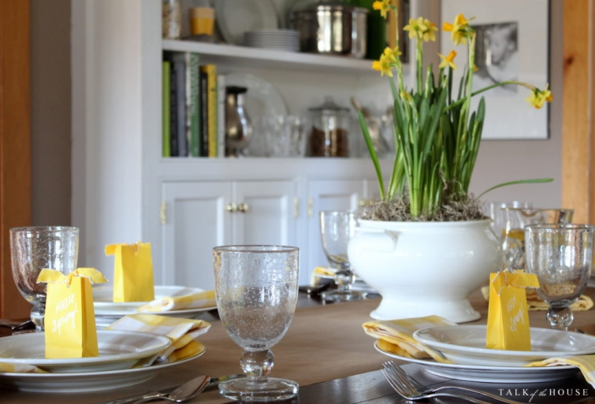
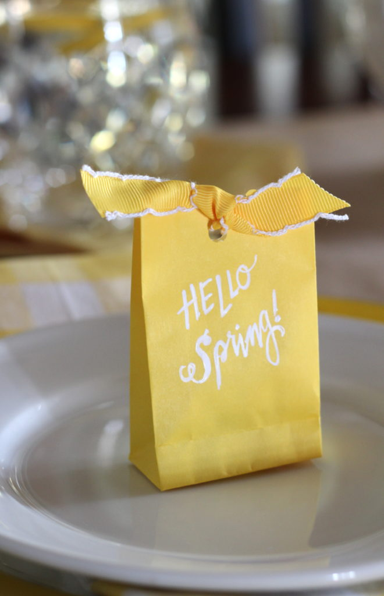

.png)
.PNG)
.PNG)
.PNG)
.PNG)
.PNG)
.JPG)
.JPG)
.PNG)
.PNG)



This has been one strange winter for most of the country; hasn’t it? Here in Georgia it seems like spring has officially arrived (and been here for a few weeks!)

Hello Spring! Azaleas, forsythia, daffodils…all in bloom. And one of our apple trees is also covered in flowers….all waaay too early!
.jpg)
We even broke a record with today’s high of 81 degrees (but Sunday does take us back down into the 30’s for a low.) I have heard from a number of you on Instagram that you have had the same mild winter that we have had here.

With all this spring like weather, I had to put away any hint of winter in the house and bring out the spring time greens and yellows…and daffodils. 🙂

I wish now I had written some spring time words on the kraft paper runner (like flowers, sunshine, daffodils, etc.) or the names of everyone at the table. Oh well, I’ll do it the next time I use a paper runner. 🙂


The yellow plates are the Kate Spade Rutherford pattern that I found a few years ago at Home Goods. I have recently seen them at TJMaxx too.


The little “Hello Spring” sacks are filled with candy.The yellow buffalo check napkins are towels that were purchased a couple of years ago at Sur La Table.


The green and yellow is also in the kitchen. Bye-bye red buffalo check drapes for awhile.
Hello Gabbie.
(It’s been so warm she likes to nap on the air conditioner vent. 🙂 )

The green plaid drapes are about 15 years old. I made them from fabric I ordered from a local fabric store that has since gone out of business.


More daffodils by the sink…


and a few more on the kitchen desk.

The early spring chalkboard wears a recipe for yummy lemon bars. 🙂
(Wouldn’t you like to have some right now?!)

And although it appears that winter has gone away, I don’t totally believe it has really left us for the season,
and here’s why.
Our eldest son was born in early March. My husband built a new wooden swing set for our son’s 5th birthday, and we held his birthday party outside in our yard on sunny mild Saturday – March 6, 1993.

The following week a blizzard – yes a real blizzard – hit the state of Georgia! (At least that is what the weathermen called it.) Middle Georgia recorded over 2 and 1/2 inches of snow on Saturday, March 13. Quite a change from the previous week’s mild, beautiful weather! So you never know what fickle Mother Nature may have in store for us.

But even if a blizzard decides to visit us in the next couple of weeks, it will still be spring time inside our home. Here’s hoping you have a beautiful spring like day in store to enjoy! And thank you so much for stopping by for a visit here today!
Until next time…


.PNG)
Kelly,
I love all your Spring green and yellow. It makes everything look fresh. Gabbie looks adorable with her little bow as well. I love daffodils this time of year but Gerbera Daises are my favorite flowers. Thanks for sharing! Take care.
Dawn
Oh, Kelly! Daffodils and Spring green and yellow (and Gabi, too!♥) just brought smiles to me as I read through your blog post. Yes, it has been very mild here in central Virginia – more than mild, it was 78 on two days last week! Up and down… forsythia is blooming all over, tulip magnolias also. Daffodils, crocus…and it’s only February! I see neighbors planting, but I just have my forsythia wreath on the door, nothing more for the moment until I see if it snows once more. I was caught in the April Fool’s blizzard in Boston one year ha-ha!
Thank you for sharing all your idea with us. You have a beautiful touch and sense of style and color. Happy Spring and pray it stays! mari
I’m always in awe of your wonderful decorating for each event or season! Always looks just wonderful!
I enjoy your beautiful home. Your penmanship is lovely, also you are talented in many ways. God bless you and your family!!!
I loved seeing your house decorated for spring, especially sweet Gabbie!! 🙂 I think my favorite would have to be the daffodil centerpiece in the white soup tureen….that is definitely “swoon worthy”! Thank you for sharing….
So pretty and so spring! Love the yellow. Even here in Nebraska we had 70+ degrees last week and then a snowstorm on Friday. Today, sun shining and high 50’s.
With temperatures in NC in the 70’s this weekend, your table setting has me dreaming of Spring. Yellow is a favorite color and I adore your bags, the daffodils and the table runner – all so happy! Hope you’re having a great start to your week, Kelly!
Too cute! So cheery !
You always go to great lengths to give us inspiration. Thank you for that! I love the green and yellow!
We had a false spring as well, but today it’s back to winter for a bit. Much as I want to bring out spring, I try to wait until mid March here in middle Mo. Doing some spring cleaning instead!
Everything is very “Spring” like at your home and it looks wonderful. I have a question, who comes to sit at your table to enjoy all those goodies and favors since your children are gone?
——————————————————————-
Good question Cheri! You must have missed the recent “dog” post where I mentioned that our daughter has taken a job overseeing catering events at a nearby conference center and is living with us again. So she is here nightly along with her boyfriend (almost nightly.) We are definitely no longer empty nesters. 🙂 The table settings that I show here on the blog are set for dinners where we have guests…family members and/or friends sit at our table for these dinners. (And tax forms sat all over our table last weekend. 🙁 Not my favorite guests!)
Hope you are having a good weekend!
Kelly
Your post is like a breath of fresh spring air! Loving the yellow and greens! A “visit” from you is so refreshing and peaceful. Thank you for sharing so much of yourself with us. Trying to get all my winter/reds down and doing the last of my remodeling– replacing all interior doors to white. Now to think about what to do next– outside! Always something to do especially living on a lake. Guess it is time to paint shutters!! Enjoy this early spring-/ and if we get a spring blizzard– build a fire and enjoy relaxing with a great book and some hot spice tea! 🤗
This post makes me so happy! I love springtime and your yellow and green look so pretty! I wish Easter could also be early! I had some tulips in a a pot for Valentine’s Day. Now I need the daffodils or paper whites. Yes, I remember that blizzard of 1993. I think we had about a foot of snow. I went sledding with our six year old while being five months pregnant. I also think in 1987 it snowed four times after March 7. That said, I want spring to stay! Thanks for adding to my spring fever!
Hey Kelly! Thanks for the Springy post today and for the lemon bar recipe. I plan to make them for a baby shower in April(our son’s expecting their 1st in May). Take care. Julia
I love the yellow accents! So cheerful! Earlier this week we hit 68 for a high….now we have ice and snow…go figure? I guess spring will return permanently when it’s good and ready to return…and not a moment sooner! Enjoy your day! 😉
Loving your pops of yellow for spring. Would you ever consider a tutorial on how you make your drapes you change so often or direct me/us to a site with such help! Love how your can change your decor starting with the windows!
——————————————————————–
Thank you Becky. If I make another pair of drapes for the house, I will try to photograph my process. I searched for tutorials on pinterest just then, and all the ones I could come up with were either unlined panels (mine are lined) or panels that are 54 in. wide with 48 in. wide lining. (I line ours with twin sheets which works out much better with the width of the fabric.) In essence, my project is really just like making a gigantic pillowcase with the opening of the “pillowcase” being the bottom of the drapes…and I never hem the sheet – just use the hemmed portion of it at the bottom of the drape lining.
The ability to change the look of the room with different drapes sure helps make decorating easier!
Kelly
Your lovely pictures sure make me smile! We have had the same unusually warm temps here in Texas, too. Mind you, I am not complaining 😎 Thank you for sharing and I can’t wait to see the Spring touches in the rest of your home.
Im a fairly new reader, and have been in love with the red buffalo checks. Cant believe how totally different, and equally lovely, your home looks with the green. Amazing what fairly small changes can make!
Loving all the daffodils!! And yes.. I remember that blizzard.. I had a 10 month old and no power!!
I can hardly wait for spring to come at my home. I live in the Pacific Northwest and we still have nearly 40 inches of snow on the ground. It is going to be awhile yet. I love what you did to your house for springtime. Maybe I’ll just have to decorate now to being some sunshine inside. I love love love the colors you used and love your green curtains with all the yellow. Just looking at it puts a person in a good mood.
Checkers, yellows and whites, and everything’s nice!
I just love your spring time home. Your home is such a beautiful, everyday type of home. I glean so many wonderful ideas from it. I am wondering though, do you hand write on your chalkboard or print out then copy?
——————————————————————–
Hi Linda!
I write out all the chalkboards free hand, but I do often look at fonts online just for ideas on letter formation. Jacques and Gilles is a font I like to see for its letter styling.
Hope this helps!
Kelly
So pretty and Springy! I am LOVING our early Spring here in Virginia!! 🙂 Loving my power bill too! 😉 My daffodils are blooming and like you, the green and yellow accessories have made their way around the house. We ad thunderstorms this morning so I am hoping the old wive’s tale isn’t true and we don’t have frost May 25th!
Living in Canada, winter takes us right into April most years. My daughters birthday is on April 20, and I can count on one hand how many times we have celebrated her birthday without snow. As I get older, the less I like the winter. Pretty yes, but it is just waaaaaay too long!
Living in Texas, Spring means bluebonnets and Indian paintbrush flowers to me! Those colors are blue and orange. Hmmm. Maybe I can come up with a decorating scheme with those colors for Spring! Now I am inspired! Thank you!
If I dared pull out one thing “spring,” we’d surely have a late freeze! I’ll live through your beautiful house full of cheer and cross my fingers winter has totally passed.
Love the fresh yellows and greens. It makes me want to open all the windows in the house and breath in the spring air. Unfortunately, those of us in the South know this is a bad idea unless you want your entire home covered in yellow pollen. Gabbie is growing big so fast! She looks like a sweetheart.
——————————————————————–
I was just thinking about all the pollen to come on the porch yesterday. Wish we could put in some kind of glass panels during the time it falls so that it does not cover every single thing out there. Gabbie has doubled her weight in 4 weeks! She went from 11 lbs. at the end of Jan to 22 lbs. at the vet this week! She is growing TOO fast for me.
Kelly
I love the craft paper runner idea! I will definitely steal that! Ref previous comment, I have also wondered about the chalk lettering…. Final gush: my eyes are continually pleased by your mixture of metals within rooms, within vignettes, as well as a house that sports painted and stained finish work (built ins, trim, etc).
Really final comment: thanks for including a leggy shot of The Gab. As the mom of a 1/2 lab-1/2 golden, I am amazed at your instagram pics because Gab is cooperating/not wiggling!
———————————————————————–
You go right ahead and steal that idea (especially since I didn’t originate it. 🙂 ) I did 2 posts on lettering waaaay back, and you can find the first one here: http://www.talkofthehouse.com/a-lettering-post-for-you/ Part 2 is here: http://www.talkofthehouse.com/lettering-part-2-chalkboard-tutorial/ and it has more info on chalkboard writing that the first one does.
Yes the house has a mix of everything…although I would LOVE to brighten up the interior a bit more by painting all the doors and trim white. (Not gonna happen though.) Glad you like the mix. 🙂 Gabbie is not easy to photograph…as I am sure you know with your beautiful guy. I take a zillion and hope for one decent one out of the batch!
Have a good weekend Rachel!
Kelly
I love all the cheerful yellow – definitely a springy vibe! We have had ridiculous temperatures in NJ this week. Today it will be in the 70s again! Of course, I remember many years of snow in March AND April so we are not out of the woods yet! We are getting spoiled with this weather, though. I guess we should enjoy it while we can – like everything in life!
Shelley
——————————————————————-
Good philosophy Shelley! And I am thinking we are not out of the woods either. We will probably have winter in late March and early April. 70’s in NJ in February is crazy!!
Kelly
Love seeing your house with spring colors. These glimpses into your house and decorating are my favorite!
Other than an early January snowstorm, Richmond has had such a mild winter. All the daffodils are blooming.
Thanks for the post!
——————————————————————-
Thank you! This has been the most crazy winter that I can ever remember! I am not ready for the heat of summer though. Spring can hang around a loooooong time for us. 🙂
Thank you for reading!
Kelly
This has been the strangest weather that I can remember. It’s way too early for all this blooming, but it has happened. Our yard has never greened up this early. I’m afraid we are going to get slammed with some really cold weather when it’s officially spring.
——————————————————————
It has. Like you, I am afraid we are in for a rude awakening when cold comes back in the picture. You KNOW we always have a cold snap around Easter. I hate to think what it is going to do to all the plants that will be fully budded out.
Kelly
I just love when you do these posts. Okay, question….where do you store all of these dishes? You have so many beautiful dishes and everything coordinates! Also, do you do the chalkboard writing or is it somehow printed out. I’m trying to figure out how your penmanship is so perfect? Time to tell your secrets! Your daffodils are so pretty….I am just getting my Paperwhites to bloom that I planted before Thanksgiving! Have a delightful day!
——————————————————————–
I am glad you enjoy the decorating posts Lisa! 🙂 Check out this post for info on all my storage: http://www.talkofthehouse.com/the-storage-and-organization-post/ And yes, I do the chalkboard lettering (it’s not printed out.) You can see one of the two lettering posts here: http://www.talkofthehouse.com/lettering-part-2-chalkboard-tutorial/ Hope this helps! Good luck with your paperwhites. Those are what my mother-in-law wanted for all her Christmas decorating.
Kelly
Thank you for the burst of Spring, Kelly. So pretty. Perhaps a bunch of yellow tulips will brighten my table tonight. Enjoy your weekend, T
—————————————————————–
You are welcome Tricia! 🙂 Hope you get that bunch of tulips for your table today. I have been looking for stems of daffodils (not potted) for a couple of arrangements but have had no luck. Perhaps I can find a yard or two to raid around here! LOL
Kelly